Team members:
- Nisarg Shah
- Rahul RL
- Smriti S
- Ashvin Prasanth
- Jay Mandal
Introduction
The solution to the inverse kinematic is of utmost importance in the robotics industry because in every application of robotics, we are known the desired position of the end effector and we must achieve this desired position through the robotic arm designed by setting the correct joint angles. It is a well-known fact that for a particular position of the end effector either the solution doesn’t exist or there can be multiple solutions for a particular position of the end effector. There have been many solutions proposed to solve the inverse kinematics problem. All the solutions can be broadly classified as:
-
Algebraic Methods
In the algebraic methods, cartesian space and the transformation between cartesian spaces are used. In the solution the system will define Denavit & Hartenberg (DH) parameters for all joints of a robotic arm to describe a robotic arm about types of joint or length in each link. Then, multiply position of the end-effector (or desired position) by orthonormal matrices (4×4 matrices) to find all position of joints in Cartesian space and use inverse trigonometric functions to solve angles of robotic arm joints.
-
Geometric Methods
Geometric methods are suitable only for lesser Degree of freedom and when the number of links in the robotic arm are not more than 2. This is because the trigonometric functions that involve in larger number of links are much more complex.
-
Iterative Methods
The iterative methods use numerical method techniques for solving the problem. Now, the popular new solutions are neural network approaches that training network with data of the end-effector positions and angles of joints to create the model.
However, the problem with the neural network approaches is that they are computationally expensive. The architectures involve a lot of hidden units and lots of hidden layers making it harder to compute. The reason for choosing deeper neural networks is that shallow neural networks are not able to learn the dataset accurately. The reason for it is because of the choice of activation function. The inverse kinematics problem involves the neural network learning a complex inverse sinusoidal function and hence this research paper tries to propose an activation function which involves an inverse sine term hence allowing the neural network to generalize faster. This project shows that with the introduction of the inverse sine non linearity, the neural network is able to generalize faster and hence making the inverse kinematics problem computationally less expensive.
Activation Functions
In artificial neural networks, the activation function of a node defines the output of that node given an input or set of inputs. They are generally introduced in neural networks so that the neural networks can learn complex non-linear functions easily.
There are a lot of common activation functions used by the machine learning community. Sigmoid Activation Function is the most used activation function as it brings down the input to a value between 0 and 1.
𝑓(𝑥) = 1/(1+exp(−𝑥))
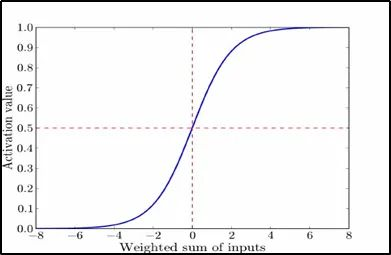
Sigmoid activation function attains the value 1 for large positive input parameter and 0 for large negative input parameters.
In this project, we are trying to couple the effects of the sigmoid activation function with an inverse sinusoid activation function for predicting the values of joint angles.
𝑔(𝑥) = arc sin(𝑥)
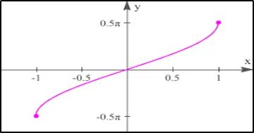
Fig 2 : Inverse Sine function
The arc sin activation function takes in value between -1 and 1 and outputs an angle between -Π/2 to Π/2.
Since sigmoid activation function is input to the arc sin activation function, hence the output of the activation function is 0 to Π/2.
Robotic arm setup
The robotic arm model that was used to test the results is the 3 link 2 DOF planar robotic arm with link lengths in the ratio 1:1:1. Specifically the link lengths are considered as 2 units.
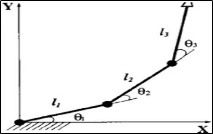
Fig 3: Robotic arm set up used for the project
The forward kinematics equations for the above robotic arm setup are given by
𝑥 = 2 ∗ cos (theta1) + 2 ∗ cos (theta1 + theta2) + 2 ∗ cos (theta1 + theta2 + theta3) 𝑦 = 2 ∗ sin (theta1) + 2 ∗ sin (theta1 + theta2) + 2 ∗ sin (theta1 + theta2 + theta3)
In a 2D space, we plotted the trajectory followed by our robotic arm setup by giving increments to thetas of 1 degree.
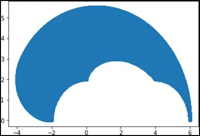
Fig 4 : Trajectory followed by robotic arm in 2 D space
To prepare the dataset for training the neural network model, the above forward kinematics equations were used.
Computation Model
The computation model used for training is a simple neural network architecture without any hidden layers to reduce the computational requirements and in turn test the new activation and loss functions.
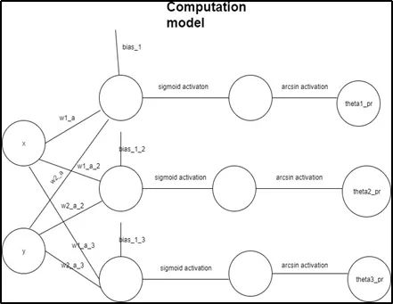
Fig 5 : Computation model used
The input to the network is x and y which represents the position of the end effector. Taking a weighted average, a linear function is created for the prediction of thetas.
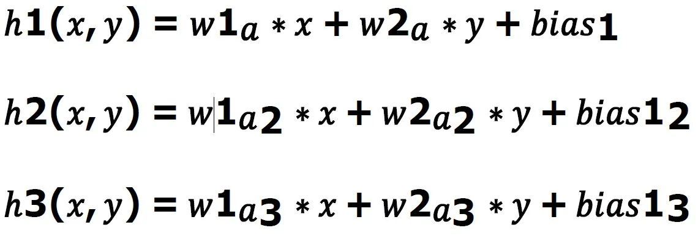
These functions are then passed into sigmoid and arc sin activation functions to predict the thetas.
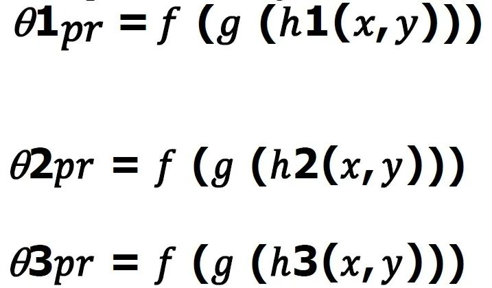
Here (f, g) are sigmoid and arc sin activation functions respectively.
Here we need not compare the predicted thetas with the original theta’s since we know that for a particular end effector position, there can be a lot of theta’s possible.
Loss Function
After the prediction of theta’s, x & y are predicted using the forward kinematic equations.
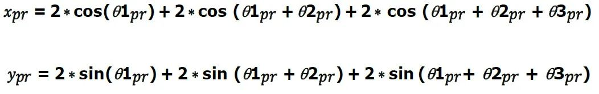
The predicted x, predicted y is compared with original x & y respectively using the mean squared loss function.
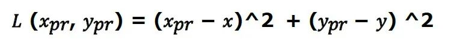
The objective of training of the neural network model involves minimizing the loss function.
Optimization
The weights are assigned randomly and the best weights that minimize the loss function are chosen using the gradient based optimization technique.
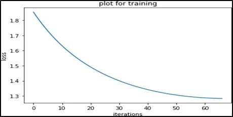
Fig 6 : Loss vs Iterations plot
Results
Using the new loss & activation function & comparatively simpler network architecture, the thetas were accurately predicted so that the loss is minimized.
We observed that even for a simple architecture as shown in the computational model, the x’s were predicted up to an average accuracy of ±0.75 whereas y’s were predicted up to an average accuracy of ±1.2.
The results show that introduction of sinusoidal non linearity in the machine learning is making it predict much accurate results even with a very simple computational model hence improving the computational capabilities.
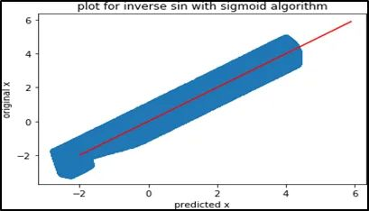
Fig 7 : Predicted x vs original x
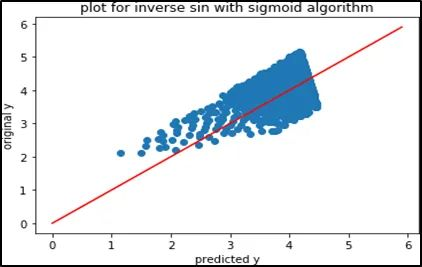
Fig 8: Predicted y vs original y
Conclusion
This project introduces an activation and loss function for the neural network architecture to solve inverse kinematics problem which helps to largely reduce the depth of neural network architecture used.
With the help of inverse sinusoidal activation function with sigmoid and mean squared loss function over the predicted x, y, we are able to significantly reduce the computational requirements and also obtain satisfactory results.
Hence by the introduction of activation and loss function proposed, we can successfully handle the tradeoff between computational requirements and accuracy while solving the inverse kinematics problem using neural networks.
A best fit straight line is passed through a subset of the training data for which the mean squared loss is within the acceptable range. This allows the robotic arm to move in a straight line. By further increasing the degrees of freedom for the base, the robotic arm can be made to traverse the entire 2 D Plane.